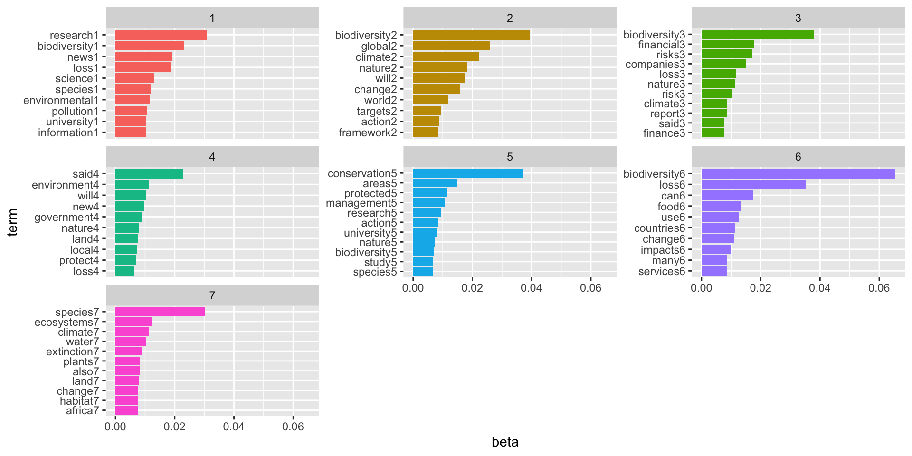
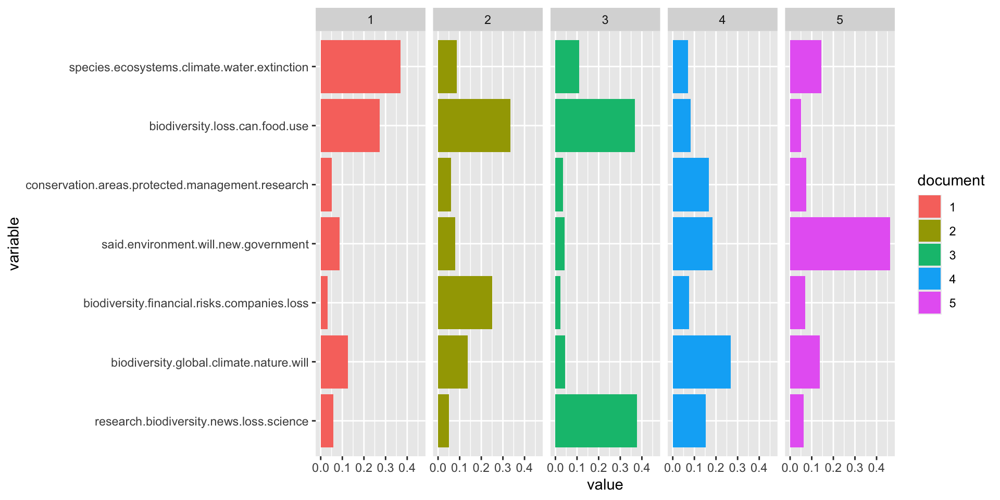

library(quanteda)
library(tm)
library(topicmodels)
library(ldatuning)
library(tidyverse)
library(tidytext)
library(reshape2)
library(LexisNexisTools)Introduction
In this blog post, we will explore the topic of biodiversity loss using text analysis techniques in R. We will use the quanteda, tm, topicmodels, ldatuning, and other relevant packages to process and analyze a set of articles related to biodiversity loss. The goal is to identify the main topics discussed in these articles and visualize the results.
First, let’s load the necessary libraries and set the working directory to the location of our data files.
setwd("/Users/maxwellpatterson/Desktop/personal/maxwellpatt.github.io/blog/2024-4-26-topics/data/bio-1")
# Reading in docx files
post_files <- list.files(pattern = ".docx",
path = getwd(),
full.names = TRUE,
recursive = TRUE,
ignore.case = TRUE)
# Use LNT to handle docs
dat <- lnt_read(post_files)
meta_df <- dat@meta
articles_df <- dat@articles
paragraphs_df <- dat@paragraphs
data <- tibble(Date=meta_df$Date, Headline = meta_df$Headline, id = articles_df$ID, text = articles_df$Article)Data Cleaning
Now, let’s clean up the data by removing duplicates, creating a corpus, and examining the tokens. A corpus is just a collection of all the words across all of the articles we are feeding in, with tokens being each of the words in the corpus. We’re working with 161 different news articles on biodiversity loss!
# Cleaning up data
articles <- data %>%
dplyr::filter(!is.na(Headline)) %>%
distinct(Headline, .keep_all = TRUE)
# Create a corpus text from the text in the articles
articles_corpus <- corpus(articles$text)
# Add stop words
add_stops <- stopwords(kind = quanteda_options("language_stopwords"))
# Examine tokens
tokens(articles_corpus)Tokens consisting of 161 documents.
text1 :
[1] "The" "topic" "of" "this"
[5] "year's" "International" "Day" "for"
[9] "Biological" "Diversity" "is" "'"
[ ... and 1,186 more ]
text2 :
[1] "November" "17" "," "2022"
[5] "Release" "date" "-" "16112022"
[9] "-" "While" "carbon-driven" "climate"
[ ... and 1,125 more ]
text3 :
[1] "November" "23" "," "2023" "Release" "date"
[7] "-" "22112023" "-" "A" "research" "group"
[ ... and 1,577 more ]
text4 :
[1] "March" "17" "," "2023" "Release" "date"
[7] "-" "16032023" "-" "A" "new" "research"
[ ... and 341 more ]
text5 :
[1] "Government" "has" "failed" "to" "adequately"
[6] "protect" "biodiversity" "and" "\"" "urgent"
[11] "action" "\""
[ ... and 457 more ]
text6 :
[1] "New" "Delhi" "," "May" "21"
[6] "(" "IANS" ")" "With" "global"
[11] "biodiversity" "loss"
[ ... and 633 more ]
[ reached max_ndoc ... 155 more documents ]What we see above is all of the tokens split up across the entire corpus.
Next, we’ll perform some preprocessing steps on the tokens, such as removing punctuation, numbers, URLs, and stop words, converting to lowercase, and trimming the document-feature matrix.
# Remove punctuation, numbers and url
toks <- tokens(articles_corpus, remove_punct = T, remove_numbers = T, remove_url = T)
# Remove stop words
tok1 <- tokens_select(toks, pattern = add_stops, selection = "remove")
# Convert to lower case
dfm1 <- dfm(tok1, tolower = T)
# Remove words that are included only 1 or 2 times
dfm2 <- dfm_trim(dfm1, min_docfreq = 2)
sel_idx <- slam::row_sums(dfm2) > 0
dfm <- dfm2[sel_idx, ]Finding the Optimal Number of Topics
To determine the optimal number of topics for our analysis, we’ll use the FindTopicsNumber function from the ldatuning package.
set.seed(123)
results <- FindTopicsNumber(dfm,
topics = seq(from = 2,
to = 20,
by = 1),
metrics = c("CaoJuan2009", "Deveaud2014"),
method = "Gibbs",
verbose = T)fit models... done.
calculate metrics:
CaoJuan2009... done.
Deveaud2014... done.FindTopicsNumber_plot(results)
Based on the results when I first ran this model, k = 7 appeared to be the optimal number of topics. Note that the graph is looking different on this outputted blog post, but the topics below are identical. So let’s just pretend like this graph is a placeholder!
Running the Topic Model
Now that we have determined the optimal number of topics, let’s run the Latent Dirichlet Allocation (LDA) topic model and show the most prevalent topics.
set.seed(123)
# set k value based
k <- 7
# run model
topicModel_k7 <- LDA(dfm,
k,
method = "Gibbs",
control = list(iter = 1000),
verbose = 25
)
# get results
results <- posterior(topicModel_k7)
attributes(results)$names
[1] "terms" "topics"# define matrices for interpretation
beta <- results$terms
theta <- results$topics
topics <- tidy(topicModel_k7, matrix = "beta")
# pull top terms
top_terms <- topics %>%
group_by(topic) %>%
top_n(10, beta) %>%
ungroup() %>%
arrange(topic, -beta)
top_terms# A tibble: 73 × 3
topic term beta
<int> <chr> <dbl>
1 1 research 0.0309
2 1 biodiversity 0.0232
3 1 news 0.0192
4 1 loss 0.0187
5 1 science 0.0132
6 1 species 0.0120
7 1 environmental 0.0118
8 1 pollution 0.0108
9 1 information 0.0102
10 1 university 0.0102
# ℹ 63 more rowsVisualizing Top Terms by Topic
Let’s visualize the top terms for each topic using a bar plot.
top_terms %>%
mutate(term = reorder_within(term, beta, topic, sep = "")) %>%
ggplot(aes(term, beta, fill = factor(topic))) +
geom_col(show.legend = F) +
facet_wrap(~topic, scales = "free_y") +
scale_x_reordered() +
coord_flip()
This plot breaks down the most frequent words in each of the topic groups. The first topic group seems to be composed of articles related to academia with research, university, and science being some of the most frequent terms in the group. The fourth topic group has higher frequency of finance related terms like finance, risk, economic, and banks. These articles are likely related to the financial implications of biodiversity loss, which is one of the most underrated aspects of climate change in the general public in my opinion. The fifth topic group has key terms related to the energy sector and pollutants, and the sixth group has key words like food and water which signal a potential focus on agriculture for articles in this group.
Examining Topic Proportions
Next, let’s examine the topic proportions for a few example documents.
# assign names to topics
topic_words <- terms(topicModel_k7, 5)
topic_names <- apply(topic_words, 2, paste, collapse = " ")
#specify # of examples to inspect
example_ids <- c(1:5)
n <- length(example_ids)
# get topic proportions from example documents
example_props <- theta[example_ids,]
colnames(example_props) <- topic_names
#combine example topics with identifiers and melt to plotting form
viz_df <- melt(cbind(data.frame(example_props),
document = factor(1:n),
variable.name = "topic",
id.vars = "document"))
ggplot(data = viz_df, aes(variable, value, fill = document),
ylab = "proportion") +
geom_bar(stat = "identity") +
coord_flip() +
facet_wrap(~ document, ncol = n)
This plot shows the importance of each topic group in each respective article. For example, the first article has the highest frequency of terms found in group two, while the second article has the most terms that define the third grouping. It’s important to note that the order of the groups is irrelevant, it is the most frequent terms that construct each of the topic groups that is useful.
Takeaways
The topic analysis done in this blog post demonstrates the power of using text mining techniques to gain insights from large collections of textual data on complex issues like biodiversity loss. By applying methods like LDA topic modeling, we can extract the dominant themes and concepts discussed across numerous documents in an unsupervised manner.
For researchers, policymakers, and practitioners working on biodiversity conservation, having the ability to quickly identify and visualize the key topics can save valuable time and resources in their efforts. Some potential applications are:
Literature Review and Knowledge Synthesis: Topic modeling can help synthesize the vast amount of literature and reports on biodiversity loss by automatically surfacing the main themes, trends, and focus areas. This can accelerate literature reviews and help researchers quickly understand the outlook of knowledge on the topic.
Monitoring Public Discourse: By analyzing news articles, social media posts, and other public textual data, topic models can reveal how different aspects of biodiversity loss are being discussed in public discourse. This information can help guide communication strategies and public outreach efforts by conservation organizations.
Policy Analysis: Policymakers can use topic modeling to analyze policy documents, stakeholder submissions, and public comments related to biodiversity policies and regulations. Understanding the dominant topics and concerns can inform evidence-based policymaking and support effective implementation of conservation measures.
Identifying Research Gaps: The topics extracted from existing literature can highlight potential gaps or understudied areas in biodiversity conservation. This information can aid future research agendas and funding priorities.
Cross-Disciplinary Collaboration: Topic modeling can reveal connections and overlaps between different disciplines studying biodiversity loss, such as ecology, environmental economics, and policy studies. This can promote interdisciplinary collaborations and knowledge exchange, which is critical in the fight against climate change.
While topic analysis is an exploratory strategy and is best coupled with domain expertise and further analysis, it provides a powerful lens for obtaining data-driven insights from large text datasets. As the volume of text data continues to grow, leveraging techniques like topic modeling will become increasingly valuable for understanding complex environmental issues and informing decision-making processes related to biodiversity conservation efforts.